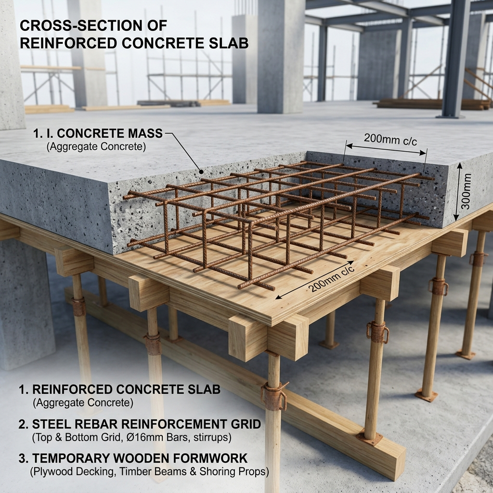
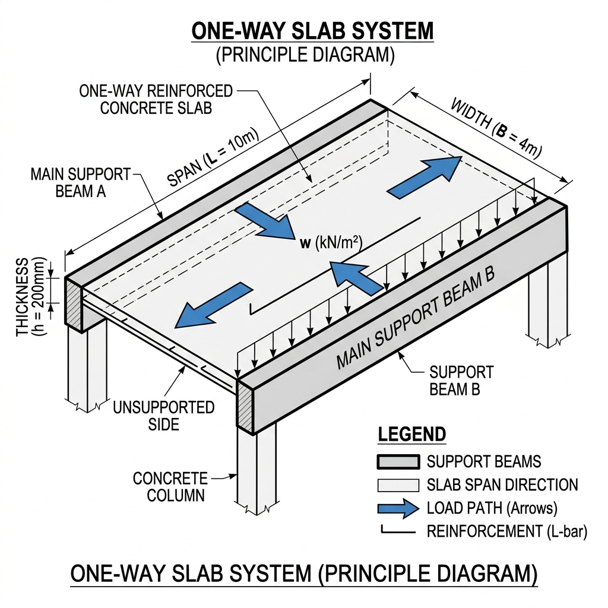
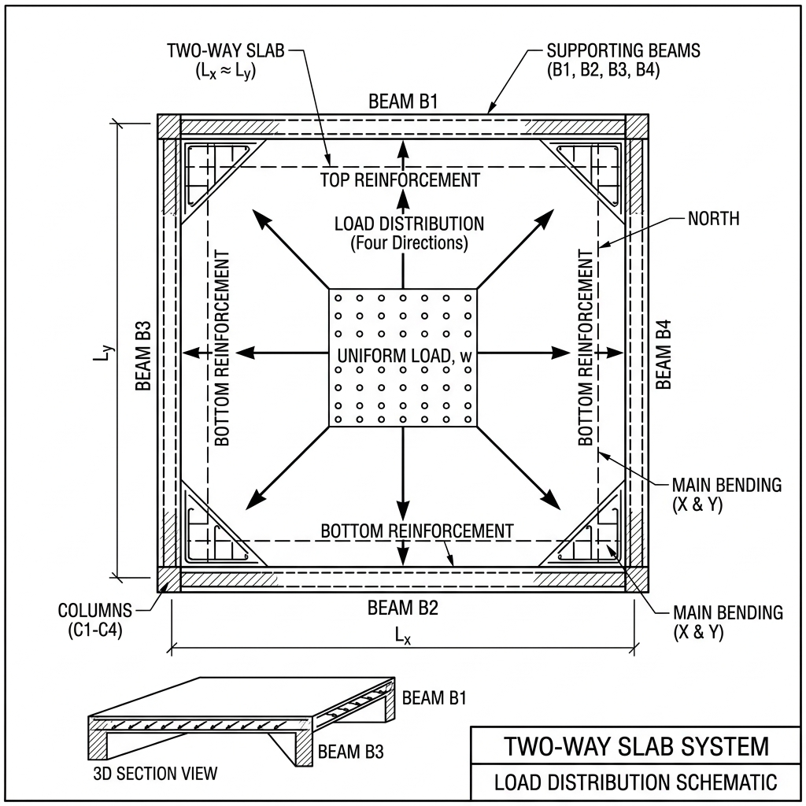

Waa maxay Slab?
Slab waa xubin dhismeed (structural element) oo fidsan, oo inta badan laga sameeyo shub la xoojiyey (reinforced concrete). Kaas oo loogu talagalay inuu qaado culaysyada kala duwan (sida dadka, alaabta, iyo culeyska dhismaha), isla markaana si badbaado leh ugu gudbiyo qaybaha kale ee dhismaha sida beams iyo columns.
Waxaa loo isticmaalaa in uu noqdo:
- Sagxad (floor).
- Saqaf (roof).
- Ama meel dusha sare ah oo culays qaadi karta.
Qaybaha uu ka kooban yahay Slab
Slab-ku wuxuu ka kooban yahay saddex qaybood oo waaweyn:

Sawir muujinaya qaybaha Slab-ka: Shubka, Birta, iyo Formwork-ga
- Concrete (Shubka): Waxay Slab-ka siisaa qaabka guud iyo adkaanta (strength) slab-ka.
- Reinforcement (Birta): Waa biraha lagu dhex daro shubka si ay u bixiyaan xoog dheeraad ah.
Waxay ka hortagaan:- Dildilaaca (cracking).
- Jabitaanka (failure).
- Formwork (Shuttering): Waa qaab dhismeedka ku meel gaarka ah ee lagu shubo shubka inta uu weli qoyan yahay.
Shaqadiisu waa:- Inuu siiyo slab-ka qaab sax ah.
- Inuu hayo shubka ilaa uu ka adkaanayo (harden).
Saddexdaas qaybood waxay slab-ka ka dhigayaan inuu noqdo mid adag, qaab leh, oo ammaan ah.
Noocyada Slabs (Types of Slabs)
1. One Way Slab
Waa slab uu culaysku u gudbiyo hal jiho oo keliya, badanaa waxaa taageera laba dhinac (opposite sides) sida beams ama walls.
Si fudud: Waa slab culayskiisu u socdo hal direction.
Slab-ka wuxuu Noqonayaa One Way Slab hadii: Ly ÷ Lx ≥ 2
- Ly = Dhinaca dheer ee Slab-ka.
- Lx = Dhinaca gaaban ee Slab-ka.

Sida uu Culayska u gudbiyo (Load Behavior)
- Culayska wuxuu u gudbaa jihada gaaban (short span direction).
- Kadibna wuxuu gaarayaa beams-ka.
- Ugu dambayn wuxuu u gudbaa columns.
Reinforcement (Qaabka Birta u taalo ama loo dhigo)
- Biraha ugu muhiimsan (main reinforcement) waxay u socdaan jihada gaaban (short span).
- Biraha kale (distribution bars) waxay u socdaan jiho kale si ay u xoojiyaan slab-ka.
Main Reinforcement (Birta Ugu Muhiimsan): Kuwani waa biraha sida toos ah loogu talagalay inay qabtaan tension-ka ka dhasha foorarka (Bending).
Sidee u shaqeeyaan?
Marka culays la saaro slab-ka:
- Wuxuu bilaabaa bending.
- Qaybta sare compression (cadaadis) ayaa ka dhasha.
- Qaybta hoose tension (jiidasho) ayaa iyana ka dhasha.
Concrete-kuna ma qaadi karo tension. Halkaan ayay main reinforcement muhiim ka noqdaan. Waxayna raacaan jihada slab-ka uu bending-ka u sameenayo (short span).
Distribution Bars (Biraha Kala Qaybinta): Waa biraha kaabaya main bars-ka, sidoo kalana waxaa loo yaqaanaa secondary reinforcement.
- Waxay u socdaan jihada ka soo horjeeda main bars-ka.
- Badanaa waa ka yar yihiin main bars-ka.
- Ma qaadaan culays weyn.
- Waxay ka hortagaan dildilaac (cracks), waana anti-crack bars.
Si Kooban
Distribution bars: Waa biraha caawiya Main Bars ee ka hortaga cracks-ka.
2. Two-Way Slab
Waa slab uu culaysku u gudbo laba jiho (two directions), taasoo ka dhigan in culayska uu u kala fido dhinaca dhererka iyo ballaca labadaba.
Si fudud: Waa slab culayskiisu u socdo laba direction.
Slab-ka wuxuu Noqonayaa Two Way Slab hadii: Ly ÷ Lx < 2

Sida uu Culayska u gudbiyo (Load Behavior)
- Culayska slab-ka saran wuxuu u kala baxaa labada jiho.
- Waxaa qaada beams-ka ku wareegsan.
- Ugu dambayn wuxuu culayska gaarayaa foundation-ka.
Reinforcement (Qaabka Birta u taalo ama loo dhigo)
Two way slab waxaa sidoo kale lagu gartaa:
- Main reinforcement laba jiho ayuu u socdaa.
- Ma jiro hal jiho oo kaliya oo culays qaada.
- Biraha waxay sameeyaan grid (mesh).
3. Flat Slab
Ma lahan beams (ama waa yar yihiin). Si toos ah ayuu u saaranyahay columns. Waxaana badanaa loo isticmaalaa dhismayaasha casriga ah.
4. Hollow / Ribbed Slab
Waa Slab leh tunnels (godad) si loo dhimo miisaanka slab-ka iyada oo aysan wax saameyn ah ku yeelan xooggiisa.
Waxaa badanaa loo isticmaalaa dhismayaasha dabaqyada badan (multi-story buildings) sababtoo ah waxay fududeysaa culayska saaran columns-ka iyo foundations-ka.
Dhumucda Slab-ka (Thickness) - Caadi ahaan: 100mm – 200mm
Waxayna ku xiran tahay: